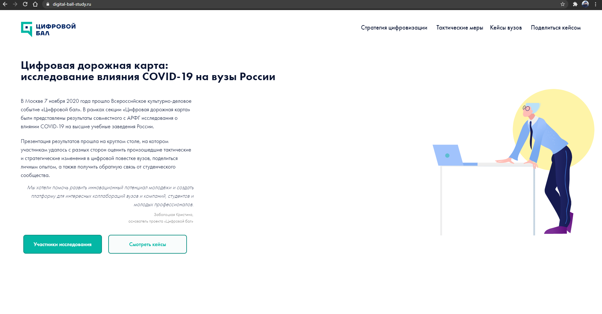

Привет!
О СЕБЕ
Я новичок в QA, до этого работал на позиции инженера ПТО в строительных компаниях. Люблю активные виды спорта, путешествовать, учиться и совершенствовать знания. Ответственный, внимателен к деталям. Умею расположить к себе членов команды, обладаю ключевыми коммуникативными навыками, любопытный, дисциплинированный. Забочусь об экологии, обожаю животных, много читаю и слушаю книги и временами играю в компьютерные игры.
Посмотреть мои работы можно: Баг-репорты & Тест-кейсы.
Что я умею
Технические скиллы
Могу проводить тесты по разным методологиям с использованием различных инструментов. Знаю жизненный цикл ПО/ бага. Разбираюсь в основах клиент-серверного взаимодействия, сетевых моделях OSI, TCP/IP. Понимаю особенности различных методов разработки ПО, в т.ч. Agile, Scrum. Участвовал в различных ОБТ и ЗБТ, в т.ч. Bookmate, Warface, Apple iOS, Windows 10, DOTA 2.
Мои работы
-  Digital Ball Study
Образование
В настоящее время я являюсь студентом 3 курса заочного отделения Уфимского нефтяного технического университета, в своей группе являюсь старостой. Всегда привлекала сфера IT, поэтому записался на курсы QA инженера в Нетологии, до этого изучал тестирование самостоятельно, посредством книг Р. Савина "Тестирование Дот Ком, или Пособие по жесткому обращению с багами в интернет-стартапах" и С. Куликова "Тестирование ПО. Базовый Курс".
Опыт работы
В этой организации я отвечал за качество материалов, приходящих на объекты строительства, качество строящихся объектов. Работал с технической документацией, оформлял её и подписывал у заказчика.
Работал с технической документацией, в т.ч. ГОСТы, СНиПы, ВСНы и другие нормативные акты и стандарты. Проводил входной контроль качества поступающих материалов, осуществлял строительный контроль объектов строительства, оформлял нормативные акты. Проводил встречи и вел переговоры с заказчиками.
Осуществлял контроль качества поступающих материалов, проводил технический контроль за объектами строительства, приемка готового объекта к дальнейшей сдачи заказчику. Составление итоговых отчетов по строительству. Разработка и внедрение методик производства работ. Анализ отклонений от сроков строительства.
Это моя первая серьезная работа, где я научился работать в команде. Помимо продаж услуг я всегда старался помогать клиентам в решении их проблем с качеством обслуживания. Так же я проводил 2 этап собеседований, а так же тренинги по обучению новых сотрудников.
Достижения
В области тестирования недавно, поэтому стараюсь развиваться и учиться как можно быстрее. Имею опыт в сфере контроля качества, поэтому изучение тестирования идет для меня легко. Так же умею тестировать не только веб-сервисы, а так же немного и мобильные приложения.
-
- - Имею опыт в тестировании компонентном, интеграционном, системном, приемочном и др. Знаком с принципами тестирования методами черного и белого ящика, регрессинного тестирования, Smoke.
- -Есть опыт в написании тест-кейсов, чек-листов, тест-сьютов, тест-планов, баг-репортов, составление отчета о тестировании.
- -Умею тестировать API с использованием инструмента Postman.
- -Имею опыт работы в команде, умею мотивировать людей к достижению командных целей.
-
- -Хорошо разбираюсь в системах управления тестирования, такие как Zephyr, Test-Rail, qTest и другие.
- -Понимаю принципы работы в баг-треккинговых системах Jira, Redmine, Mantis.
- -Являюсь одним из лучших студентов Нетологии, постоянно проявляю активность во время вебинаров, общаюсь с преподавателями в Slack.
Контакты
Моя электронная почта: rustem.mirzakaev@gmail.com, мой номер телефона: +7 (927) 304-18-18